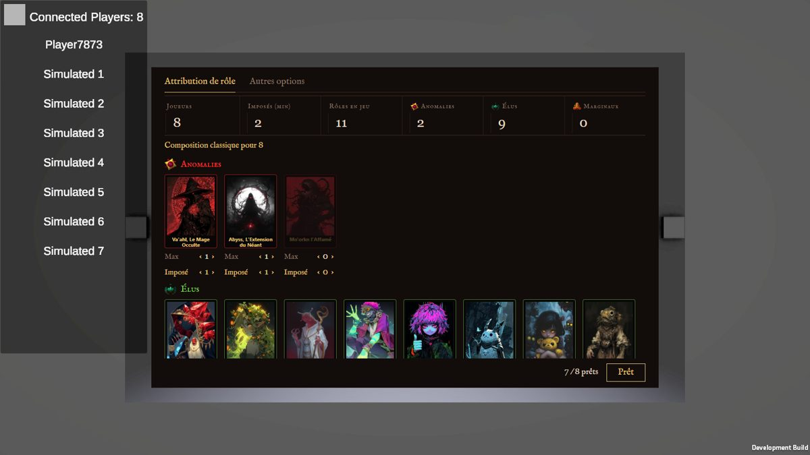

Tes votes du tour 2 : ce qui fait IA, ce sont les boîtes dans des boîtes (Q2), les mots (Q4),
la police système et le vert (Q5) ; les compteurs, pas vraiment (Q1). S5 (l'original sans les détails
web) est « déjà mieux », et l'idée du liège (L2) te plaît. Donc ici : la mise en page de S5, toutes les infos de
l'original, et je pousse sur ces trois causes.
L'original

S5 du tour 2, « déjà mieux »
Plus aucun cadre autour des infos : ni tuile, ni bloc de réglages, ni bouton encadré. Les cartes restent les
cartes du jeu (fond noir, nom doré).
Police du livre des personnages (IM Fell, déjà dans le jeu), plus de vert ; l'or des cartes et le rouge des
sceaux à la place.
Les mots de la section 2 sont appliqués aux trois écrans avec W1 ; touche les « ‹ › » pour voir les
compteurs et les erreurs bouger.
1. L'écran
Même plan, même infos, trois fonds : la différence est la matière et ce qu'elle remplace.
S6S5 sans aucun cadre
S5 poussé au bout : les compteurs n'ont plus de traits, les onglets plus de soulignement, les
cartes plus de bordure de couleur (la faction est dite par le titre de la section), « Prêt » est un mot avec
un sceau au lieu d'un bouton. Un rôle imposé porte son sceau sur la carte.
S7S5 sur le liège
L'idée de L2 sans ses défauts : au lieu de six étiquettes pour les compteurs, une seule bande de
papier punaisée en haut (onglets et compteurs écrits dessus) ; les cartes du jeu punaisées telles quelles, et
sous chacune un seul papier avec ses deux réglages. Hors partie : carte grisée, sans punaise.
S8S5 sur une page de parchemin
La tablette affiche une page du même parchemin que la fiche de rôle qui s'ouvre quand on touche
une carte : encre brune, titres en petites capitales, traits d'encre fins entre les compteurs. Le passage de
la liste à la fiche devient continu.
2. Les mots
Les libellés de l'original, et deux autres façons de dire la même chose. Les écrans au-dessus utilisent W1.
W1Les termes actuels, nettoyés
On garde Max et Imposé (déjà connus des joueurs), on enlève le jargon et les parenthèses.
Onglets : Rôles, Autres options
Compteurs : Joueurs 8, Imposés 2, Rôles en jeu 11, Anomalies 2…
Sous une carte : Max ‹ 1 ›, Imposé ‹ 1 ›
Préréglage : Composition classique pour 8 ; modifiée : Composition modifiée ↳ Revenir à la classique
Bas : 7 joueurs prêts sur 8, Prêt
Erreur : Trop de rôles imposés : 9 pour 8 joueurs. Retire un imposé ou ajoute un joueur.
W2Dire ce que ça fait
Chaque réglage dit son effet, sans avoir à connaître le système.
Compteurs : Joueurs 8, Rôles possibles 11, Garantis 2…
Sous une carte : Au plus ‹ 1 ›, Au moins ‹ 1 ›
Bas : 3 rôles resteront factices.7 joueurs prêts sur 8
W3Le vocabulaire des cartes
Les rôles sont des cartes dans le jeu : on compose un paquet, certaines cartes sont garanties
(jamais factices).
Compteurs : Joueurs 8, Cartes dans le paquet 11, Garanties 2…
Sous une carte : Exemplaires ‹ 1 ›, Garanties ‹ 1 ›
Préréglage : Paquet classique pour 8
Bas : 3 cartes resteront factices.7 joueurs prêts sur 8